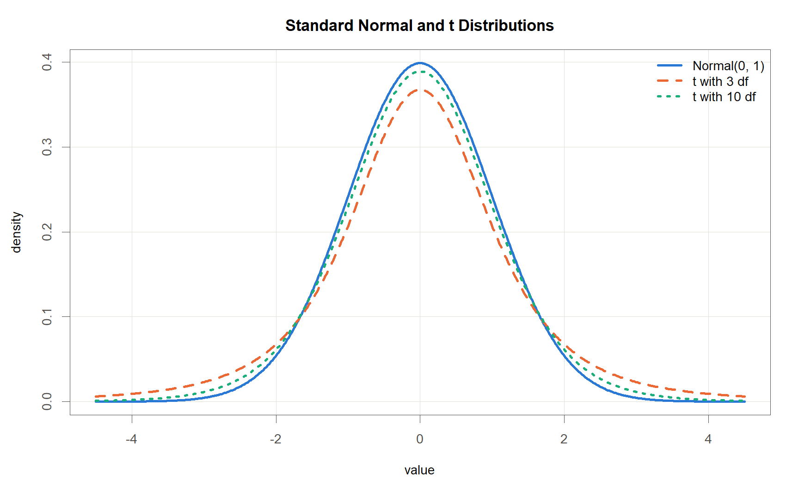

여기서 \(y_i\)는 \(i\)번째 관측의 반응변수, \(x_{i1}\)은 \(i\)번째 관측의 첫 번째 설명변수 값, \(\beta_0,\beta_1,\dots\)는 모든 관측에 공통인 회귀계수, \(\varepsilon_i\)는 \(i\)번째 관측의 오차, 관측 수는 \(n=30\)이다.
핵심
관측이 바뀌어도 식의 모양은 동일하고, 회귀계수 \(\beta_0,\beta_1,\dots\)는 모든 관측에 공통임
같은 모양이 반복되면 하나로 묶어 쓰는 것이 자연스러움
행렬 표기는 이 30줄을 한 줄로 줄여 준다
벡터와 행렬
정의
벡터 : 숫자를 세로로 줄 세운 배열. 굵은 소문자 \(\mathbf{y}\)로 표기한다.
행렬 : 숫자를 행과 열의 격자로 배열한 것. 굵은 대문자 \(\mathbf{X}\)로 표기한다.
차원 : 크기는 항상 “행 \(\times\) 열” 순서로 적는다.
표기 규약
원소 \(x_{ij}\)의 아래첨자는 행 먼저, 열 나중
굵은 글씨는 묶음, 아래첨자가 붙은 보통 글씨는 그 안의 낱개 숫자 하나
\(\mathbf{X}\)는 절편열을 포함한 \(n\times(p+1)\) 설계행렬 전용 기호
여기서 \(\mathbf{y}\)는 반응변수 \(y_1,\dots,y_{30}\)을 세로로 모은 벡터, \(\mathbf{X}\)는 1열이 모두 1인 절편열이고 나머지 \(p\)개 열이 설명변수 값인 설계행렬, \(x_{ij}\)는 \(i\)번째 관측의 \(j\)번째 설명변수 값, \(n\)은 관측 수, \(p\)는 설명변수의 개수이다.
여기서 \(\mathbf{X}\)는 절편열을 포함한 \(n\times(p+1)\) 설계행렬이다.
여기서 \(\mathbf{y}\)는 반응변수 \(n\)개를 모은 \(n\times 1\) 벡터, \(\mathbf{X}\)는 1열이 모두 1이고 나머지 \(p\)개 열이 설명변수 값인 설계행렬, \(\boldsymbol{\beta}\)는 회귀계수 \(\beta_0,\beta_1,\dots,\beta_p\)를 모은 \((p+1)\times 1\) 벡터, \(\boldsymbol{\varepsilon}\)는 오차 \(\varepsilon_1,\dots,\varepsilon_n\)을 모은 \(n\times 1\) 벡터이며 각 \(\varepsilon_i\)가 흩어진 정도를 \(\sigma^2\)으로 적는다.
행렬 곱과 개별 식의 동치
행렬 곱 규칙은 행과 열을 짝지어 곱해서 더하기다. \(\mathbf{X}\boldsymbol{\beta}\)의 \(i\)번째 성분이 \(\beta_0+\beta_1x_{i1}+\cdots+\beta_px_{ip}\)이므로, 이 한 줄을 풀어 쓰면 앞 슬라이드의 30줄과 정확히 같다.1
아이스크림 자료
데이터 구조
First five rows of the ice cream data.
period
IC
price
income
temp
year
1
0.386
0.270
78
41
0
2
0.374
0.282
79
56
0
3
0.393
0.277
81
63
0
4
0.425
0.280
80
68
0
5
0.406
0.272
76
69
0
규모와 변수
\(n=30\)개 기간(4주 단위) \(\times\) 6개 열: 기간 번호 period와 분석 변수 5개
IC: 아이스크림 소비량, 반응변수 \(y_i\) 자리에 들어감
price: 가격, income: 소득, temp: 평균 기온, 설명변수 \(x_{ij}\) 자리에 들어감
year: 관측 연차(0, 1, 2). 계절이 아니라 자료를 모은 해를 뜻하며, Dummy Variable 장에서 가변수로 투입
아이스크림 자료
설계행렬
Design matrix for the ice cream data, \(n=30\), \(p=3\)
여기서 \(\mathbf{y}\)는 30개 기간의 소비량 IC를 모은 벡터, \(\mathbf{X}\)의 1열은 절편 \(\beta_0\)의 자리를 만들어 주는 1들이고 2, 3, 4열은 각각 price \(x_{i1}\), income \(x_{i2}\), temp \(x_{i3}\)이다. 첫 행의 값을 넣으면 \(x_{11}=0.270\), \(x_{12}=78\), \(x_{13}=41\), \(y_1=0.386\)이다.
\(\mathbf{X}\)의 1열이 전부 1인 이유는 행렬 곱에서 각 행마다 \(\beta_0\times 1\)이 계산되어 절편 \(\beta_0\)이 모든 기간에 똑같이 더해지도록 하기 위해서다.
# Two matrix operations used throughout this lecturet(X) # transpose: flip rows and columns, 30 x 4 -> 4 x 30solve(A) # inverse of a square matrix Asolve(A) %*% A # returns the identity matrix I
예고: 최소제곱추정량
핵심
자료 \((\mathbf{y},\mathbf{X})\)가 주어졌을 때 회귀계수의 추정값은 전치와 역행렬만으로 한 줄에 표현된다.
여기서 \(\hat{\boldsymbol{\beta}}\)는 자료로 추정한 회귀계수 벡터(위에 붙은 모자 기호는 “추정값”이라는 뜻), \(\mathbf{X}^\top\)은 \(\mathbf{X}\)의 전치, \((\mathbf{X}^\top\mathbf{X})^{-1}\)은 \(\mathbf{X}^\top\mathbf{X}\)의 역행렬, \(\mathbf{y}\)는 반응변수 벡터이다.
# The whole of least-squares regression in one lineX <-model.matrix(IC ~ price + income + temp, data = ice) # 30 x 4, first column all 1sbeta_hat <-solve(t(X) %*% X) %*%t(X) %*% ice$IC # (X'X)^{-1} X'y# identical to coef(lm(IC ~ price + income + temp, data = ice))
단순회귀, 다중회귀, 가변수회귀는 모두 이 한 줄의 특수한 경우이며, 유도는 Multiple Linear Regression 장에서 다룬다.
정규분포
정의
확률변수 \(X\)가 평균 \(\mu\), 표준편차 \(\sigma\)인 정규분포를 따를 때 \(X\sim N(\mu,\sigma^2)\)로 적고, 그 밀도함수는 다음과 같다.
여기서 \(\mu\)는 분포의 중심인 평균, \(\sigma\)는 흩어진 정도인 표준편차, \(\sigma^2\)은 표준편차를 제곱한 분산이다. 밀도함수 \(f(x)\)의 값 자체는 확률이 아니고, 곡선 아래 넓이가 확률이다. 곡선 전체의 넓이는 1이다.
모양의 성질
\(\mu\)를 중심으로 좌우대칭인 종 모양이고, 평균과 중앙값이 같음
모수 두 개(\(\mu\), \(\sigma\))만 정하면 분포 전체가 결정됨. \(\mu\)는 위치, \(\sigma\)는 폭을 조절
\(\mu=0\), \(\sigma=1\)인 경우를 표준정규분포라 하고 \(N(0,1)\)로 적음
정규분포
68-95-99.7 규칙
Coverage probabilities of the normal distribution.
Interval
Probability
\(\mu\pm 1\sigma\)
0.683
\(\mu\pm 2\sigma\)
0.954
\(\mu\pm 3\sigma\)
0.997
계산은 pnorm(1) - pnorm(-1) = 0.6827, pnorm(2) - pnorm(-2) = 0.9545, pnorm(3) - pnorm(-3) = 0.9973으로 얻는다. 즉 정규분포를 따르는 값이 평균에서 표준편차 3배 넘게 떨어질 확률은 약 0.3%로 매우 작다.
측정오차에 정규분포를 가정하는 이유
서로 독립인 작은 영향이 여러 개 더해지면 그 합의 분포는 관여한 각 요인의 분포와 무관하게 정규분포에 가까워진다(중심극한정리).
측정오차는 온도, 습도, 진동, 판독 습관 등 작은 요인 다수의 합으로 보는 것이 자연스러우므로 종 모양 분포가 근거 있는 출발점이 된다.
회귀에서는 오차 \(\varepsilon_i\)가 평균 0, 분산 \(\sigma^2\)인 정규분포를 따른다고 가정하고, 이 가정 위에서 검정과 구간추정을 한다.
회귀에서는 계수 추정값 \(\hat\beta_j\)가 통계량이며, R 출력의 Std. Error 열이 그 표준오차다
t분포
정의

Standard normal and t distributions with 3 and 10 degrees of freedom
\(\sigma\)를 모른 채 표본표준편차 \(s\)로 대신하면 \[T=\frac{\bar X-\mu}{s/\sqrt{n}}\] 는 자유도 \(n-1\)의 t분포를 따른다.
정규분포보다 봉우리가 낮고 꼬리가 두꺼움
\(\sigma\)를 추정하는 불확실성이 더해졌기 때문임
자유도가 커지면 정규분포에 가까워짐
여기서 자유도는 분산을 추정하는 데 쓸 수 있는 독립인 정보의 개수다. 자유도가 클수록 \(s\)가 \(\sigma\)에 가까워지므로 t분포는 \(N(0,1)\)에 수렴한다. 양측 2.5% 임계값을 비교하면 자유도 3에서 3.182, 자유도 10에서 2.228, 자유도 28에서 2.048이고 정규분포는 1.960이다.